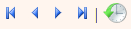

EELexi sisenemine
Sõnastiku tööaken avaneb EELexi töötoa kaudu sõnastikku sisenemisel pärast sõnastiku avalehel töö- või testversiooni valimist. Pildil on avatud Eesti kirjakeele seletussõnastiku sõnaartikkel aeroobika. Tööakna ülaosas on sõnastikutööks tarvilikud nupud, menüüd ja linnukesed, tööakna keskel on sõnaartikkel nii Toimetamisalal (vasakul) kui ka täpselt sama artikli küljendatud kuju ehk Vaade (paremal).Punasega tähistatu on kirjeldatud allolevas tabelis.
| Nr |
Funktsioon, selgitus |
Kiirklahv |
| 1 |
Sõnastiku köite valik. |
|
| 2 |
Viimati avatud olnud artikli esitus, Otsingutulemuste tabeli esitus, Uue sõnaartikli loomine, Eksport MS Wordi  Sõnastiku tööriistad |
|
| 3 |
Sõnastiku skeemifail, Lühispikker, Juhend |
|
| 4 |
Otsitava elemendi valik (struktuurilahter) – lahtril vasaku hiireklahviga klõpsates avaneb rippmenüü üksuste loendiga. Üles-alla liikudes valitakse piirkond, milles soovitakse sõna või järjendit otsida |
|
| 5 |
Tunnuse (atribuudi) väärtuste valik (juhul, kui on ette antud) |
|
| 6 |
Tunnuse otsitav väärtus |
|
| 7 |
Elemendi väärtuste valik (juhul, kui on ette antud) |
|
| 8 |
Otsingulahter – siia sisestatakse otsitav tekst (sõna või järjend), mida otsitavast elemendi seest vaja leida. Otsingut saab paindlikumaks teha metamärkide (* ja ?) abil. Nt kui struktuurilahtris on "märksõna", siis esitatakse kõik märksõnad, kui lahtrisse kirjutada tärn (*) |
|
| 9 |
||
| linnuke Otsing on tõstutundetu linnuke Otsitakse kõiki märke (vaikimisi jäetakse sümbolid arvestamata, s.t ei tehta vahet, kas tekstis esineb ka muid sümboleid (koma, semikoolon, sidekriips, allkriips, $, @ jne). linnuke Otsitakse ka fakultatiivseid järjendeid linnuke Otsitakse kogu artiklist. |
||
| Otsingu viisi määramine: 1) kõikidest elemendi all olevatest tekstidest eraldi, 2) kogu teksti kohta tervikuna, 3) ainult elemendi enda tekstides, mitte nt alamtekstides |
||
| 10 |
Otsingu käivitamine ("Otsi") |
Enter |
| 11 |
Otsingu käivitamine XML mooduse abil (nupp Otsi otsib tulemusi MySQL andmebaasist, juhul kui sõnastiku andmed on viidud MySQL-i. Juhul kui ei ole, otsitakse tulemusi XML meetodi abil) |
|
| 12 |
Rada – kuvatakse klõpsatud elemendi hierarhiline asukoht XML-failis alates artikli algusest |
|
| 13 |
Toimetamisala vaate valimine: XML, tabel, vaade |
|
| 14 |
Artikli tööriistad (peatoimetamise, toimetamise lõpu märkimine; artikli staatuse määramine jm) |
|
| 15 |
 Artiklite lehitsemine: esimene, eelmine, järgmine, viimane, Artiklite ajalugu. |
Ctl + Shift + ->; Ctl + Shift + <- |
| 16 |
Artikli valideerimine (kontrollitakse artikli vastavust XML skeemi struktuurireeglitele), Artikli salvestamine, Artikli kustutamine (või taastamine). |
|
| 17 |
||
| Vasakpoolne number sulgudes näitab, mitu paranduspuhvrit tagasi võtta saab |
||
| Parempoolne number sulgudes näitab, mitu paranduspuhvrit kokku on |
||
| Käskude tühistamine (Tühista (Undo)) |
||
| Eelmise seisu taastamine (Taasta (Redo)) |
||
| 18 |
||
| Vaate joondamine vasakust servast (vaikimisi) |
||
| Vaate joondamine keskele |
||
| Vaate joondamine paremast servast |
||
| Vaate joondamine mõlemast servast |
||
| Vaate väljatrükk |
||
| 19 |
Klõpsatud element toimetamisalas ja vaates |
|
| 20 |
Informatsioon staatusribal: mis tegevus (nt otsing), kuidas otsiti (tõstutundetult, globaalselt), palju aega kulus jne |